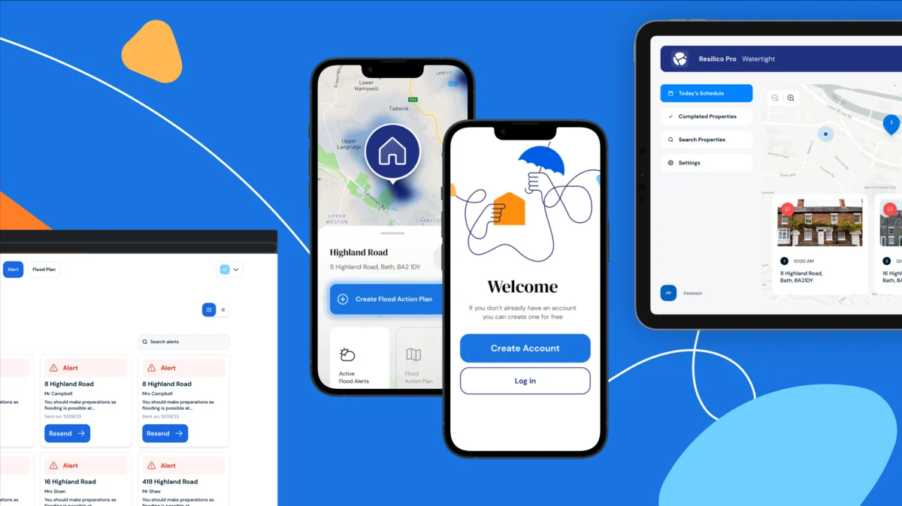
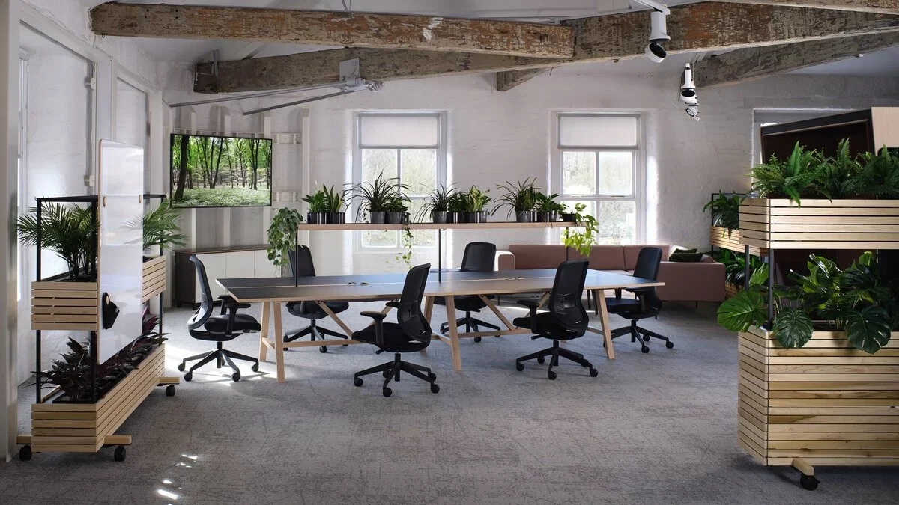
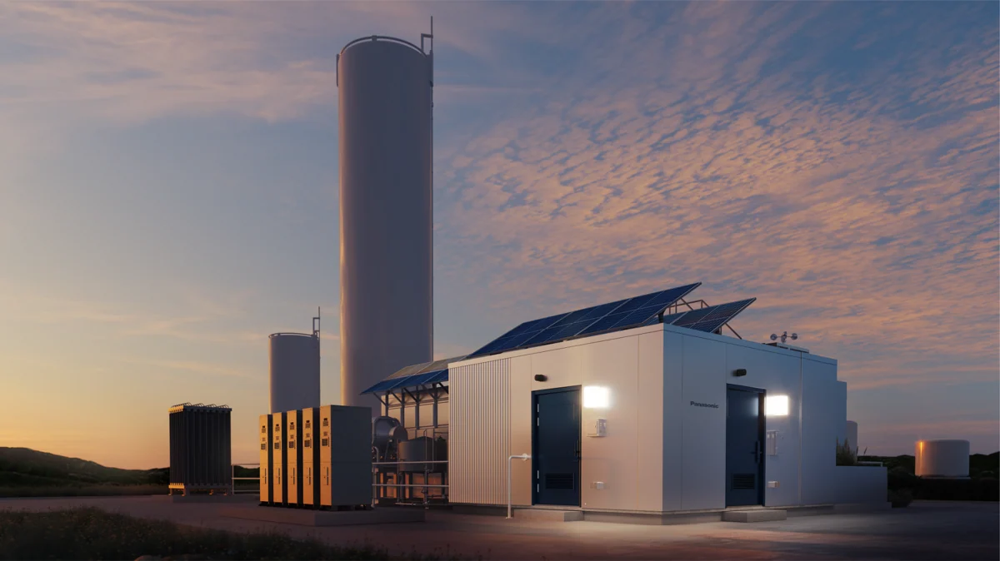
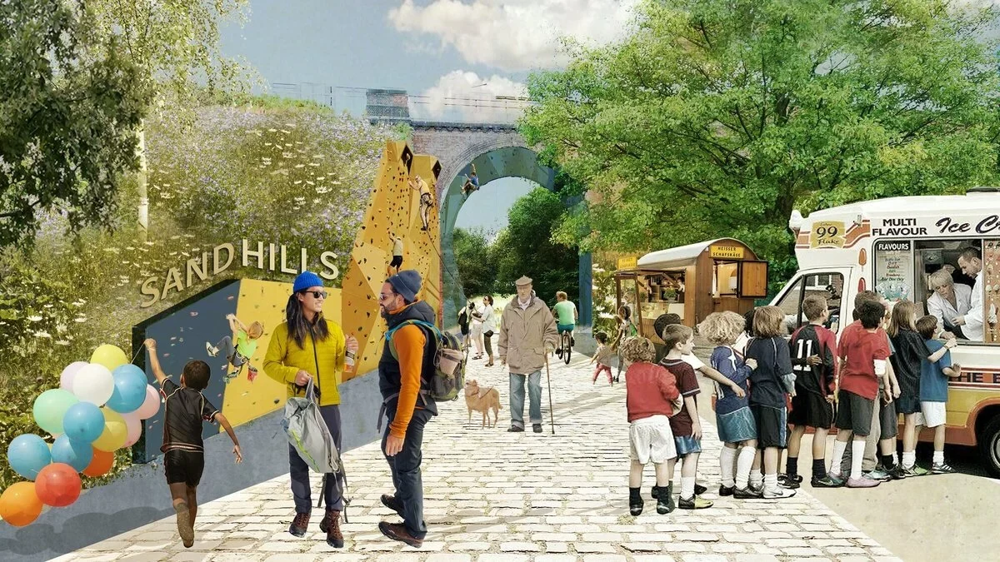
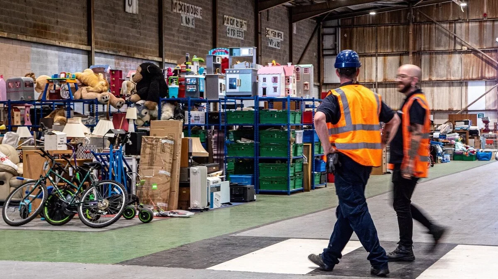

ESG 공공디자인 외전 — 영국 디자인의 환경과 사회적 가치
ESG 공공디자인외전 _ 디자인 메카 영국으로부터 들려오는 디자인의 환경과 사회적 가치
The Environmental and Social Value of Design
산업화 시대의 디자인 원형을 만들어 온 영국에는 최초의 모델들이 많다. 1835년 영국 국회 에와르트 특별위원회 ‘미술과 제조업’보고서에 이은 세계 최초의 디자인법(Design Act 1842), 최초의 디자인 대학원(RCA), 무역산업부(DTI; Department of Trade and Industry) 산하 the Council of Industrial Design (COID), Design Council 등의 디자인 지원기관 등 현재 많은 국가가 디자인 진흥을 위해 벤치마킹하는 많은 선도 사례들을 1800년대 말부터 만들어 왔다.
이러한 디자인의 메카에서 요즘 디자인의 환경과 사회적 가치에 관한 분석과 보고가 많이 나오고 있다. 영국 디자인 카운슬(Design Council)에서 정기적으로 발간하는 디자인 이코노미(Design Economy)리포트가 올해는 환경과 사회적 영향에 기여한 디자인 핵심 요소의 경제적 가치-비용과 배출을 줄이는 것부터 순환적인 비즈니스 모델, 새로운 경제효과성-에 대한 즉,ESG적인 가치에 대한 디자인 영향을 다루고 있다. Design Economy는 영국에서 혁신적이며 포괄적으로 디자인의 가치(경제적, 사회적, 환경적)를 탐구하고 분석하고 있는데 영국의 성장을 주도하고, 지속 가능성을 육성하고, 더 공정한 미래를 형성하는 데 있어 디자인의 역할에 대한 통찰력을 보여주고 있다.
과거 디자인이 산업의 발전을 위한 기능과 심미적 목표에서 최신 연구는 디자인이 어떻게 녹색 전환을 촉진하고 기술을 활용해 사회적 불평등을 해소할 수 있는지, 또 환경과 사회를 위한 어떠한 가치를 부여할 수 있는지에 주목하여 경계를 넓히고 있다. Design Council이 혁신을 옹호한 지 80주년을 기념하는 가운데, 디자인이 어떻게 사회적으로 환경적으로 가치를 연계하여 궁극적으로 번영하는 영국 경제를 구축하는 데 도움이 될 수 있는지 밝히는 몇가지 사례를 살펴본다.
Big Motive
Service Designing for flood resilience
그림 1 재산 홍수 회복력 플랫폼 Resilico © Design Economy, Design Council

"우리는 여기서 살고 숨쉬므로 지구를 위한 지속가능 디자인은 우리가 하는 일의 핵심입니다.“
Big Motive
벨파스트에 본사를 둔 Big Motive는 디지털 서비스와 서비스 디자인을 전문으로, 지속가능하고 공평하며 건강한 미래를 구축하는 디자인을 실현하고 있다. Big Motive는 지속 가능성과 포용성을 디지털 혁신, UX, 사용자 연구 및 서비스 디자인에 통합하며 특히 기후 문제를 해결하는 데 있어 디자인의 역할을 중요시 하고 있다. Big Motive는 홍수 대비를 위한 디지털 도구 Resilico와 같은 프로젝트에서 디자인이 복잡한 사회문제를 해결할 수 있음을 보여주었다. Big Motive는 광범위한 연구를 통해 홍수 대비에 영향을 미치는 주요 행동을 파악하고 Resilient Planit과 협력하여 주택 소유자, 보험사, 정부 기관과 연결하는 재산 홍수 회복력(PFR)을 촉진하는 디지털 플랫폼인 Resilico를 디자인 하였다. 이 플랫폼은 Resilico Pro, Connect, Report의 세 가지 제품으로 구성되어 있으며, 홍수 회복성을 위한 데이터 기반 솔루션을 제공한다.
재산 홍수 회복력 플랫폼 Resilico는 2023년부터 영국과 웨일즈의 100개 학교에 공급되었고 2026년까지 Aviva 및 Flood Re와의 협력을 통해 50,000명 이상의 주택 소유자를 지원할 계획이다.
John Lewis Partnership
Circular Fashion Design for future generations
”의류의 순환을 통한 지속가능한 디자인 실현”
그림 2 John Lewis Partnership © Design Economy, Design Council
2020년에 구성된 John Lewis Partnership(JLP)의 지속 가능성 팀은 환경에 대한 책임 있는 조달, 폐기물 감소 및 순환 경제 관행에 대한 이니셔티브를 추진하였는데 그들의 순환 설계 원칙은 재료, 수명 및 재활용성에 중점을 두고 있다. 2022년부터는 지속 가능한 쇼핑을 장려하기 위해 대여, 회수, 중고 제도라는 세 가지 순환 패션 이니셔티브를 도입했는데 700,000건의 웹사이트 방문과 2,000건의 렌털을 창출했다. 2023년에 출시된 중고 럭셔리 패션 팝업인 PreLoved는 JLP의 지속 가능한 제품을 더욱 확대하고 있다. 이에 발맞춰 2028년까지 모든 새로운 자체 브랜드 제품은 순환성을 염두에 두고 디자인될 것이라고 한다.
JLP는 또한 British Fashion Council의 Circular Fashion Innovation Network와 협력하고 학자들과 협력하여 지속 가능성 전략을 개선하며 단순한 의류 제품을 넘어 운영 혁신으로 확장되어 순환성을 조달 및 비즈니스 모델로 발전시키고 있다. 특히 JLP는 구세군과 협력하여 회수 제도를 통해 고객이 헌 옷을 반환하면 바우처를 받을 수 있도록 하고 회수된 의류는 재판매, 재활용 또는 섬유 재사용으로 분류되어 폐기물을 최소화하고 있다. 2023년에 시범적으로 실시된 PreLoved 이니셔티브는 고급 중고 패션을 선보이며, JLP의 순환형 패션 디자인 모델을 보여주고 있다.
Orangebox
Sustainable office furniture Product Design innovation
"지속 가능성을 염두에 두고 디자인하는 것은 프로세스의 모든 단계에 영향을 미친다.“
그림 3 Do Better Chair © Design Economy, Design Council

웨일즈 가구 제조업체인 Orangebox(오렌지박스)는 2050년까지 재활용 및 재활용 가능한 소재를 제품 디자인에 통합하여 탄소 제로를 목표로 하고, 2030년까지 배출량을 50%로 줄이는 것을 목표로 하고 있다.
Orangebox는 지속 가능한 재활용에 특화된 사무용 가구를 디자인하는 데 중점을 두고 있는데 지속 가능한 디자인 정책은 재료 조달에서 제품 수명 주기 관리에 이르기까지 제품 생애 전주기에 적용된다. Orangebox는 현지에서 조달된 재료를 우선시하며 공급업체와 긴밀히 협력하여 폐기물과 배출을 최소화하는 등 소위 운송에 소비되는 탄소를 절감할 수 있는 지역의 소비재 운영을 통해 높은 지속 가능성 표준을 운영하고 있다.
Orangebox의 베스트셀러 제품인 Do Better Chair는 2023년에 58% 재활용 소재와 98% 재활용 가능한 소재로 재설계되어 탄소 발자국(Carbon Footprint)을 40% 줄였다. 또한 폐기물에서 파생된 플라스틱 대체품인 UBQ를 통합하여 매립지 배출량을 크게 줄였소 재생산 서비스를 제공하여 사용주기가 끝난 의자를 재생 활용될 수 있도록 하여 폐기물을 줄인다. Orangebox는 제품 재설계 외에도 가구 리-제조 서비스를 도입하여 고객이 새 의자를 구매하는 대신 기존 의자를 수리하고 업그레이드할 수 있도록 서비스를 디자인하였다.
Panasonic
Strategic Product design for sustainability
” 디자이너, 엔지니어, 지속 가능성팀 간의 협력을 통한 순환 경제의 구축“
그림 4 Hydrogen Fuel Cells & Circular Packaging © Design Economy, Design Council

파나소닉 디자인 런던(Panasonic Design London : PDL)은 디자이너, 엔지니어, 지속 가능성 팀 간의 협업을 촉진함으로써 파나소닉이 순환 경제로 전환하도록 지원하고 있다. PDL은 전략적 디자인 사고(Strategic design for sustainability)를 제품 개발, 브랜딩 및 패키징 솔루션에 적용하여 회사의 지속 가능성 의제인 GREEN IMPACT를 추진하고 있다. 이 비전은 지속 가능성이 파나소닉의 모든 부서에 내재되도록 하며 이를 위해 PDL 디자인 팀은 전략적 지원자 역할을 통해 지속 가능성을 가전제품, 에너지, 포장 등 사업 운영 전반에 통합한다.
PDL은 Hydrogen Fuel Cells & Circular Packaging을 통해 파나소닉의 RE100 수소 연료 전지의 이점을 브랜딩하여 소비자에게 더 쉽게 접근될 수 있도록 하며 불필요한 재료를 제거하고 재활용성을 촉진하여 환경 영향을 줄이고 패키지 리-디자인 등의 이니셔티브를 주도했다. 이러한 새로운 가이드라인은 유럽 전역에 도입되고 있는데 PDL의 접근 방식은 전략적 디자인이 기업의 지속 가능성 노력에 어떻게 영향을 미칠 수 있는지 보여주며, 환경적 고려 사항이 초기 단계의 의사 결정에 반영되는 것을 보여주고 있다.
Planit
Moving beyond sustainable to regenerative design
"...디자인은 녹색 전환 전략에서 주요 촉매제의 역할을 할 수 있다...."
그림 5 City River Park, Manchester & Circular Packaging © Design Economy, Design Council

B Corp 인증을 Planit은 공공부문의 다양한 관계자들과 거버넌스를 구축하여 재료 선택의 탄소 영향을 평가하여 공공기관이 정보에 입각한 결정을 내릴 수 있도록 프로젝트를 지원한다. 이들의 마스터플랜과 같은 계획들은 지속 가능한 재생적 디자인의 선도 역할을 한다. 공동 창립자인 Peter Swift는 디자인의 기술적 의존에서 시스템적 사고로의 전환을 통해 "디자인이 그린(Green) 전환 단계에서 주요 가속제가 될 수 있다"고 강조한다. Planit은 또한 탄소에 관한 교육을 디자인 실무에 포함시켜 디자이너가 다르게 생각하고 디자인할 수 있도록 운영하고 있다.
프로젝트 중 하나인 맨체스터 시티 리버 파크는 최근 100년 동안 맨체스터에서 이루어진 가장 큰 재생 프로젝트로, 2038년까지 탄소 중립을 달성하는 동시에 15,000채의 주택을 건설하는 것을 목표로 하고 있다. Planit은 전략적 재생 프레임워크를 개발하고 고유한 지속 가능성 타임라인을 갖춘 7개의 녹지 공간 등 기후 긍정적 디자인 도구를 기반으로 실시간 탄소 영향 평가를 제공해 이해 관계자의 의사 결정을 지원했다. 본 프로젝트에서 Planit은 재료 선택을 최적화하여 50년 동안 약 600톤의 탄소를 격리할 수 있었다고 한다. 이러한 전략은 재료, 비용 및 장기적 지속 가능성에 대한 선택을 함에 있어 디자인기반의 정보를 제공하여 도시계획에서 친환경 디자인 전략의 가치를 강화하고 있다.
SUEZ
Service Design for Redesigning industrial waste systems
‘지속 가능한 폐기물 관리 디자인을 통한 순환 경제와 사회 안전 구현’
그림 6 The Renew Hub, Manchester © Design Economy, Design Council

SUEZ는 폐기물 관리 회사로써 디자인 선택의 중요성과 지속가능한 제품 수명에 대해 교육함으로써 지속 가능 전략을 주요 비전으로 삼고 있다. SUEZ는 매년 1,100만 톤의 폐기물을 처리하는데 그 중 83%가 재활용, 재사용 및 에너지 회수를 통해 재활용되고 있다.
SUEZ는 Greater Manchester Combined Authority와 협력하여 영국 최대의 재활용 센터를 Renew Hub를 시작했는데 가구, 장난감, 자전거, 전자 제품 등을 리뉴얼하여 3개의 Renew Shop과 온라인 플랫폼을 통해 저렴하게 재판매한다. 30개의 리사이클링 매장과 맨체스터에 있는 Renew Hub는 500,000개 이상의 품목을 폐기에서 분리하여 톤당 13,750파운드의 사회적, 환경적, 경제적 영향을 창출하고 20개 이상의 녹색 일자리를 창출하는등 지속적 경제 가치를 창출하고 있다고 한다.
2021년부터 지역 사회 이니셔티브를 위해 120만 파운드 이상을 창출했으며 Recycling Lives를 통해 전과자를 고용하여 사회적 안정 또한 창출하였다. 또한 SUEZ는 Doncaster Refurbish와 협력하여 20,000개의 저소득 가정에 필수품을 제공했으며 60명 이상의 수습생과 100명의 전과자를 고용 지원했다.
SUEZ는 2030년까지 매년 5,000톤의 폐기물을 재사용하는 것을 목표로 하며, 이를 통해 지속 가능한 폐기물 관리에 있어 순환 경제의 역할을 강화하고 있다.
* 환경적, 사회적 가치를 위한 디자인의 변화
2025 The Environmental and Social Value of Design 리포트에 따르면 60%가 넘는 영국 디자이너가 자신의 작업을 통해 환경(66%) 및 사회(60%)문제를 해결하고 있으며, 디자이너의 64%는 지난 3년 동안 환경에 초점을 맞춘 디자인에 대한 고객의 요구가 증가했다고 한다.
또한 디자인 사례를 통해 나타나는 사회와 환경을 위한 이슈는 다음과 같이 나타나고 있다.
* 효율성, 회복력 및 혁신 디자인 향상
* 더 나은 미래 디자인을 위한 영향 측정 도구
* 녹색 기술 격차를 줄이는 정책, 기업, 교육
* 저탄소 건설부터 순환 제품 혁신 디자인
* 순환적인 비즈니스 모델
다양한 산업 분야에서 지속 가능성에 대한 혁신적인 접근 방식을 보여주는 비즈니스 사례가 늘고 있고 이는 ESG적인 목표지향점과 공통점이 많고 민간과 공공의 협력을 통해 공공영역에서 구현되는 디자인의 구현으로 나타날 것으로 보인다.
이러한 트렌드의 변화 속에 우리의 공공디자인의 어떠한 전략으로 가치를 발현할 것인지 그리고 지속 가능한 디자인의 실질적인 영향을 어떻게 구현할 것인지 매우 중요한 시기이다.
[참고문헌]
Design Economy_ 2025 The Environmental and Social Value of Design (c) Design Council